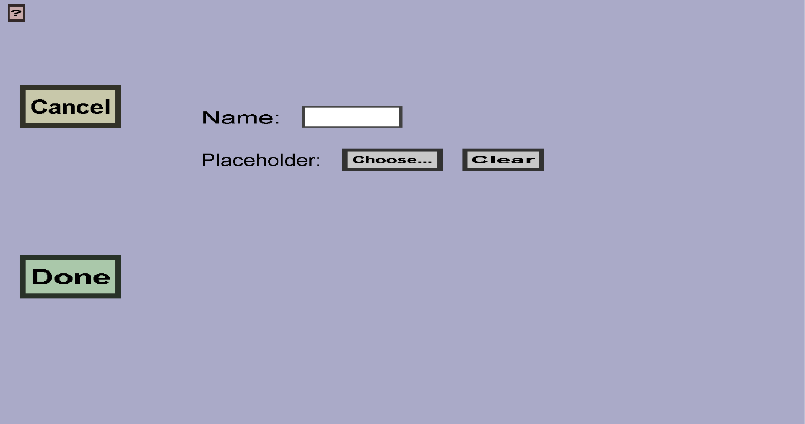

The output slot menu can be used to add output slots to a custom container. Output slots are the
slots in which the resulting items of container recipes appear when the inputs have been
converted. Output slots don't have any properties, except for its name. The menu should look like
this:

-
The 'Cancel' button will take you back to the container edit menu
you came from, without adding a new output slot.
-
The 'Done' button will replace the original slot with a new output slot with the name you
typed into the edit field (if no validation errors occur). It will then take you back to the
container edit menu you came from.
-
You should type the name of the output slot you're about to create in the edit field
on the right of 'Name:'. No two output slots of the same custom container can have the same
name. The name will not be used in-game, but it will be used to link the outputs of the
container recipes to the output slots. So to move an output slot, you would delete it and
create a new output slot with the same name somewhere else.